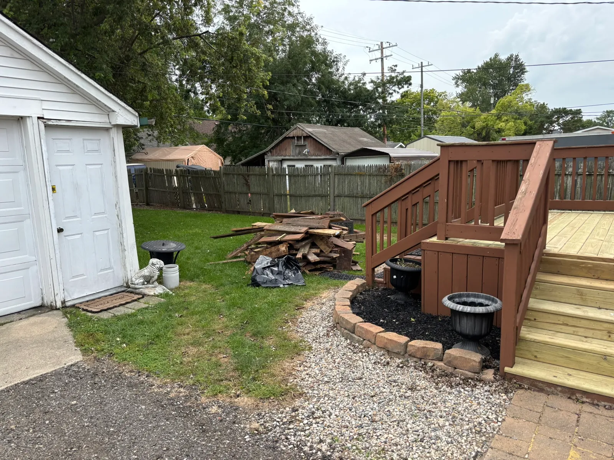
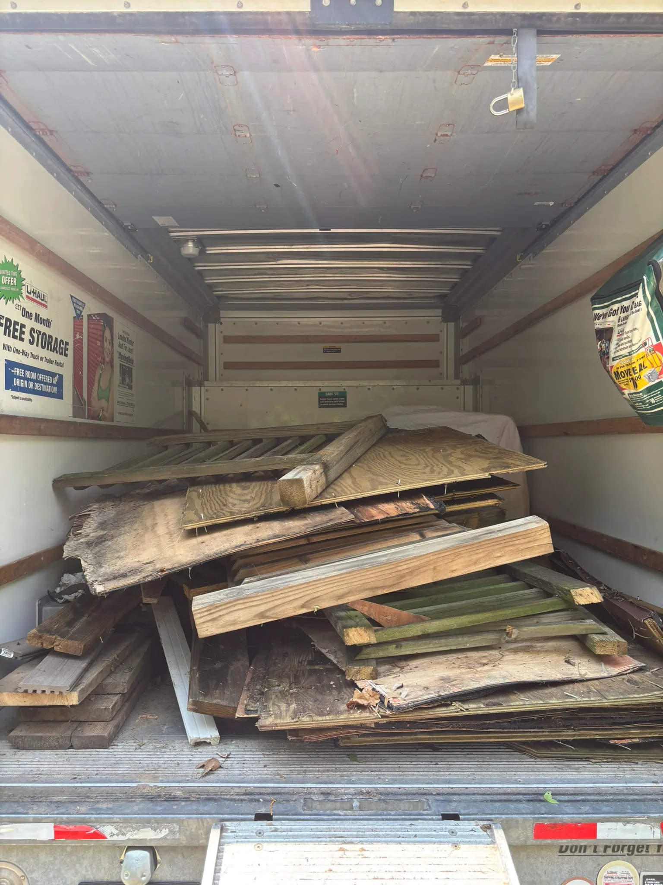
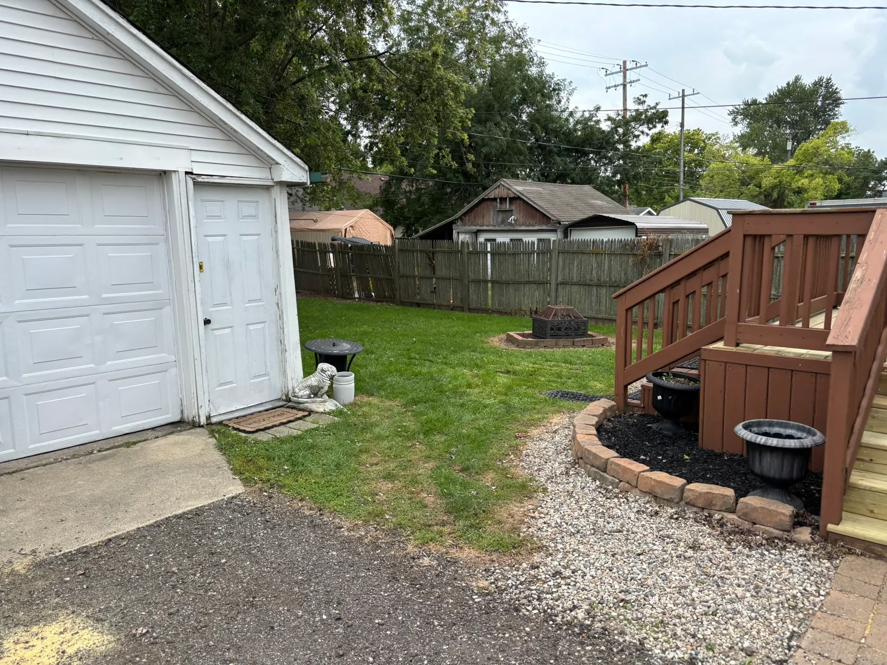
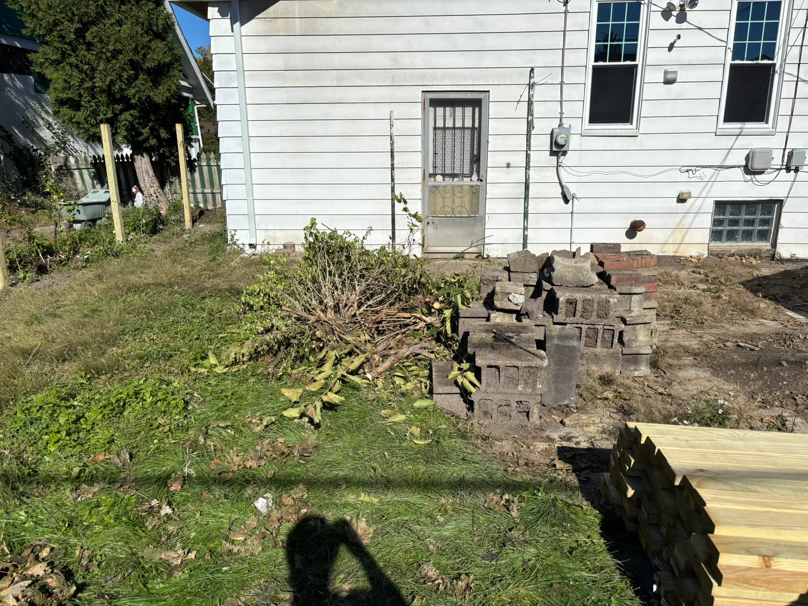
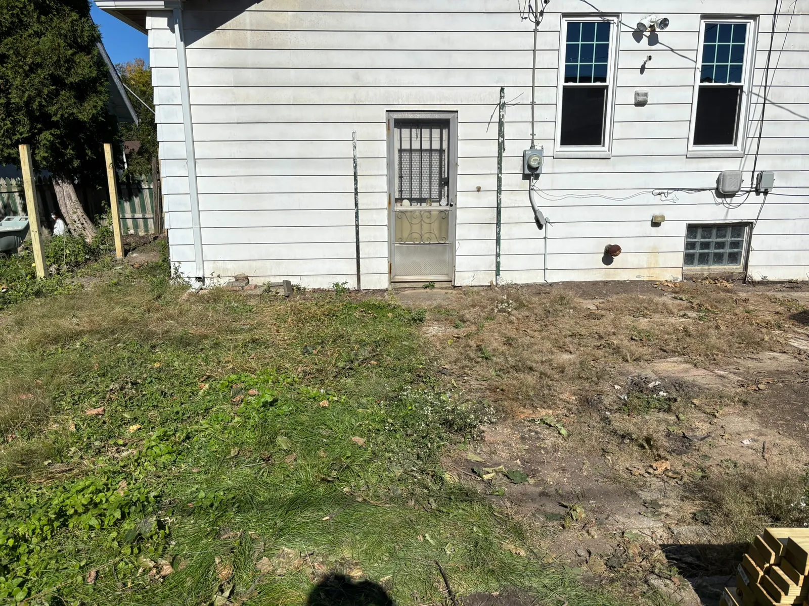
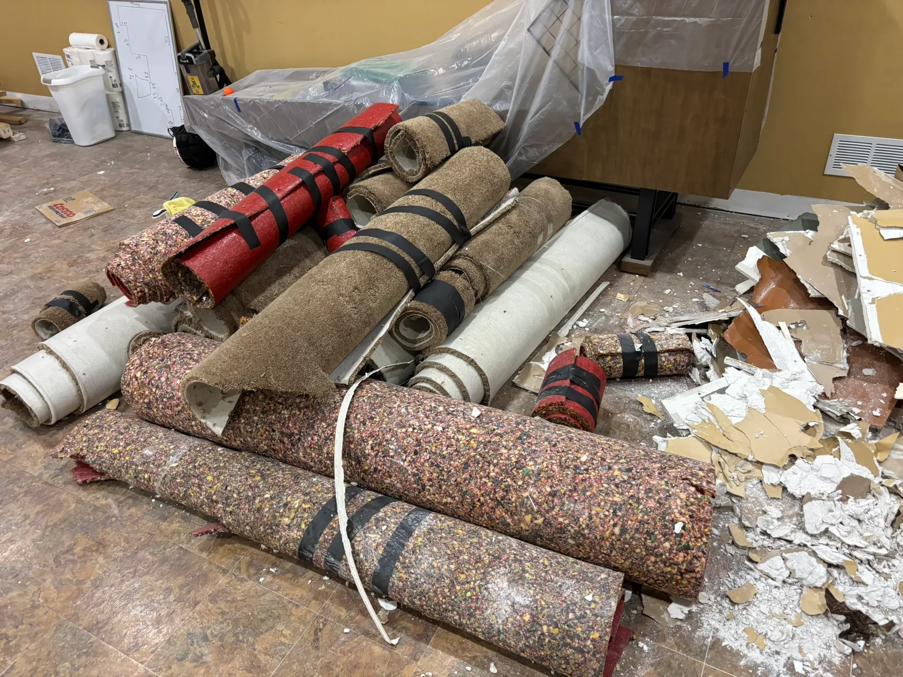
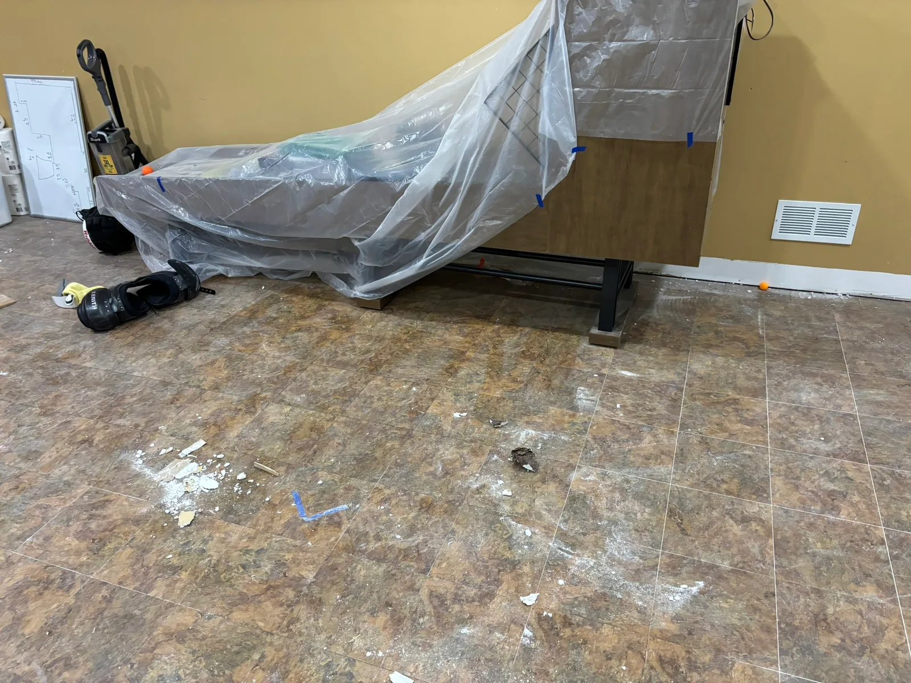
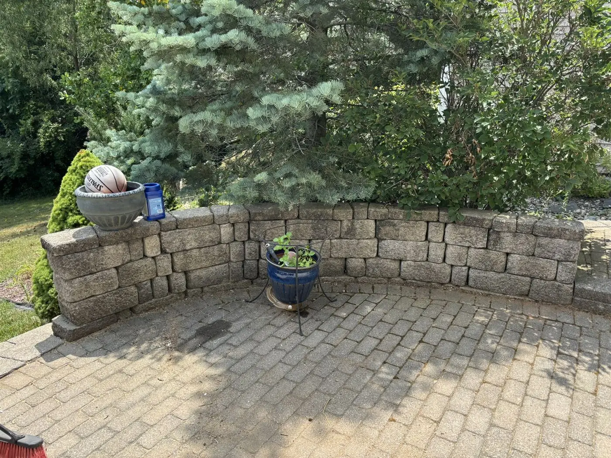
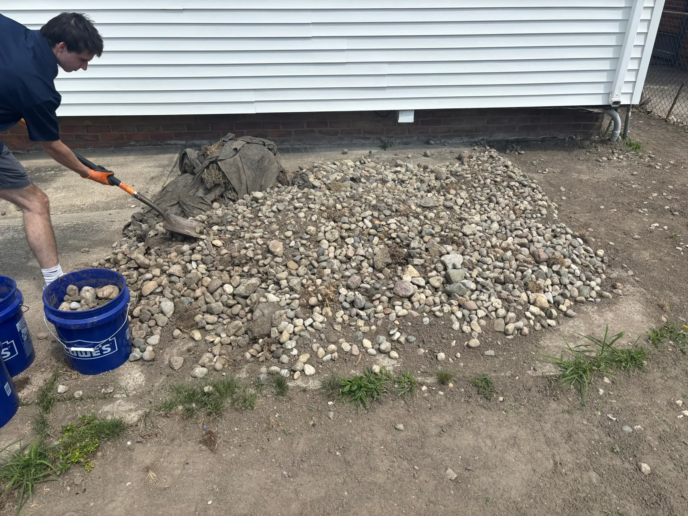
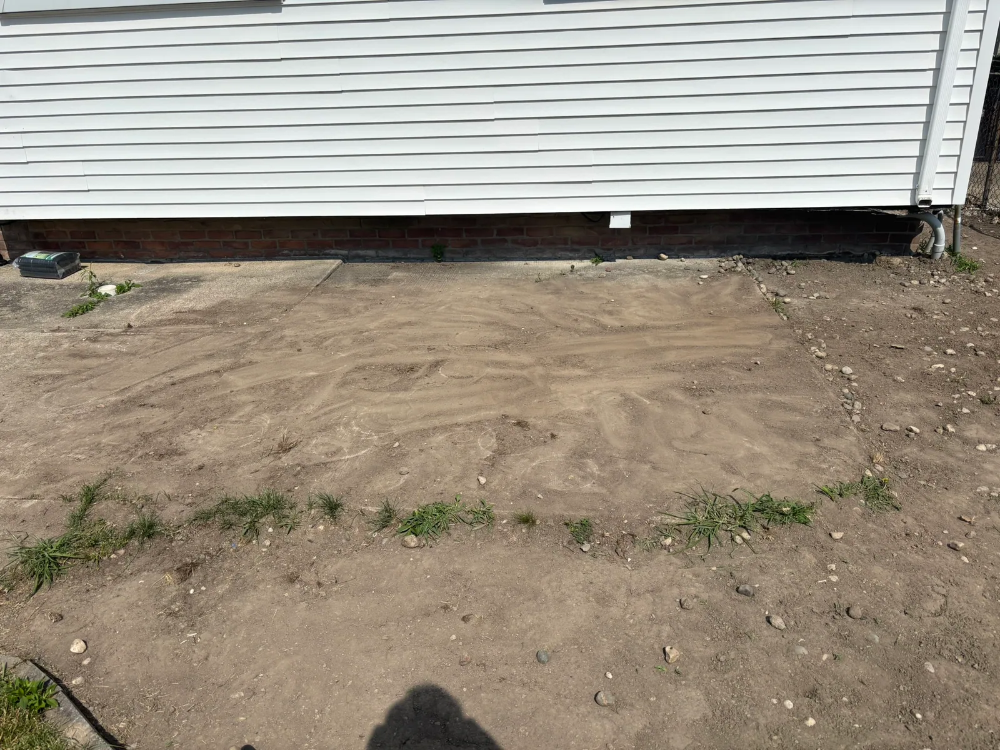

Before: Old deck boards ready for hauling in Monroe.

Southeast Michigan
Construction Debris Removal
Remodeling leftovers, old decking, and outdoor debris. Junkernauts Junk Removal loads it up and hauls it away.
Our work: old decking pickup in Monroe
- Lifting & loading included
- No dumpster to manage
- Price approved before loading
Clear the work area
The project is done. Let us handle the pile.
Pickup for home renovations, rental turnovers, and small commercial projects. Send photos so we can confirm the materials and access.
- Lumber & old decking
- Drywall & insulation
- Carpet & flooring
- Cabinets, trim & doors
- Remodeling debris
- Outdoor material piles

Real work. Clear space.
Old Decking Pickup in Monroe, Michigan
We hauled away the boards already piled in the yard and left the standing deck in place. See our Monroe junk removal service.

After: The pile hauled away, leaving the space beside the deck clear.
A straightforward pickup
Plan your debris removal
Price depends on truck space, material type, weight, and labor. See our pickup pricing guide.
Show us the pile
Send photos, your location, and any stairs, gates, long carries, or parking details.
Approve the price
We review the materials and confirm the final on-site quote before loading.
Keep your project moving
Our crew loads the approved debris and hauls it away for disposal.
Another local cleanup
Construction Debris & Yard Waste Cleanup in Detroit
Concrete blocks and cut branches, removed together. Explore our Detroit junk removal page.

Before: Concrete blocks and yard waste awaiting removal in Detroit.

After: The pile cleared from beside the home.
Carpet & Drywall Debris Pickup
Bulky renovation debris removed while the covered furniture stayed in place.

Before: carpet rolls, padding, and drywall piled up for removal.

After: the bulky debris removed, with the covered furniture left in place.
Deck Demolition Cleanup
Old boards hauled away from the patio.

Before: old deck boards ready to be hauled away.

After: the patio cleared and ready to use again.
Debris Pickup Questions
Can you remove a shed too?
Yes, we review shed projects for light demolition and shed removal, including contents removal and hauling.
What about heavy or unusual materials?
Tell us about concrete, rocks, sharp pieces, or materials needing special handling before scheduling. We confirm what we can take and how it affects the quote.
Does the pile need to be at the curb?
No. Let us know if it is in a backyard, basement, or behind a fence, and point out anything that should stay.
Outdoor Debris Removal

Before: loose material and debris ready for removal.

After: the area cleared and ready for its next use.
Serving Ann Arbor, Ypsilanti, and nearby communities. See all service areas.
Ready to clear the debris?
Send a few photos and we’ll help plan the pickup.